PRODUCT DESIGN · UX/UI DESIGN · 2026
A budgeting experience that helps young adults build awareness and reflection around their spending — making saving feel rewarding, not restrictive.
Duration
February – May 2026 (4 months)
Team
3 Product Designers
My Role
User Research, Product Design, UX/UI Design, Design System
Tools Used
Figma, FigJam, Claude AI
Why this project?
As a Gen Z living in a high cost-of-living city, I find it hard to be mindful with spending when the city makes temptation so accessible. A cup of coffee, a salad bowl, or a small dessert might seem like minor expenses, but they accumulate quickly — making it easy to drift off track of budgeting.
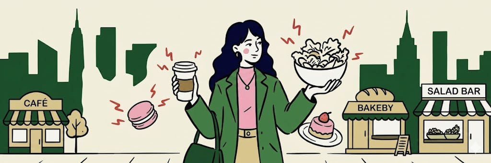
While there are countless budgeting apps on the market, few actually drive behavioral change. This realization made me see that young adults face a similar challenge, rooted in our highly digital and convenient lifestyles. Based on our industry research, we found that: Based on the industry research, we found that:
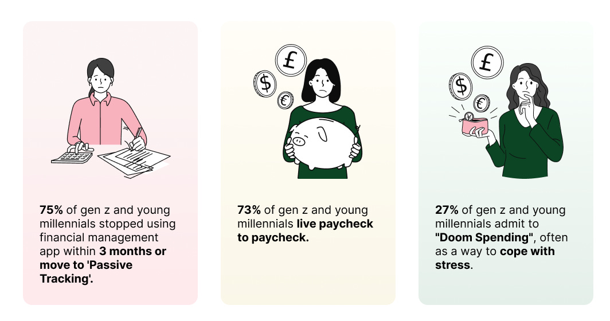
We wanted to build something different — not just another regular budgeting tool, but a true shift in approach that could really help users.
Define our problem
We conducted interviews with 6 participants aged 18–30, all based in NYC. The conversations revealed three key insights into how young adults relate to money:
01
Lack of Awareness on Spending
"I don't really know how much I spend every day, especially on small things like coffee or food."
02
Impulse & Emotional Spending
"I usually realize it wasn't necessary after I've already bought it."
03
Weak Connection to Goals
"I want to save money but I almost can't keep it."
Driven by these insights, we identified our core user challenge and mapped the current user journey to pinpoint exactly where the experience was failing them.
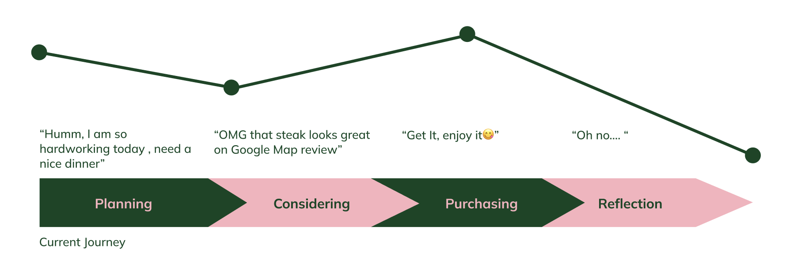
Problem Statement
How might we assist young adults who struggle with impulsive purchases to build greater awareness and reflection around their spending behaviors?
Ideation
So… how exactly do we design a different kind of budgeting app that turns our users' pain points into opportunities?
Through competitive research, we discovered that while streaks, milestones, and emotional design successfully help users build consistent habits, no existing financial app combined these behavioral mechanics into a money tracker. To explore this solution space, we used mind-mapping and SCAMPER during our brainstorming sessions to define our core focus.
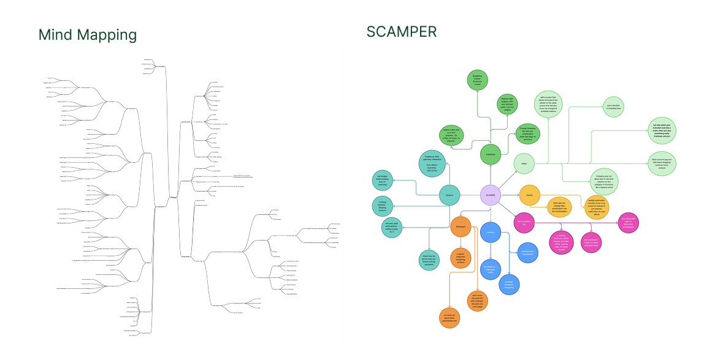
Based on our analysis, we aligned on 3 major concepts and mapped a new journey map:
01
Know my priority
Users often overspend because they lose sight of what they truly value, making it easy to waste money on impulse purchases.
02
Be consistent
Strict, set budget limits feel too restrictive and rarely last. We needed a fun, engaging way to help users build financial habits that fit their lifestyle.
03
Achieve my goal
Showing users what they've achieved keeps them coming back. When people see their real progress, it motivates them to keep going.
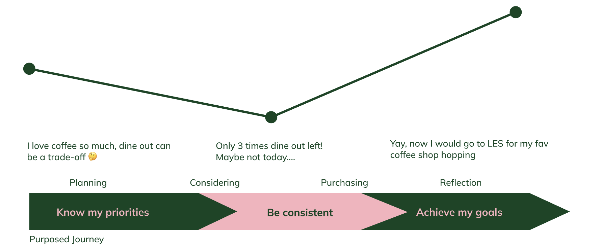
With our core concepts established, we started visualizing
We sketched ideas that translate these three concepts into functional features, then brought them to life in a mid-fidelity prototype.
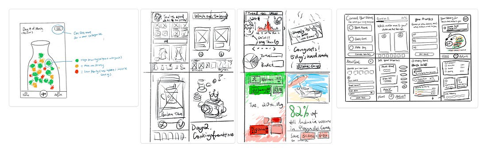
Turning them into mid-fidelity prototype
Forming our brand identity & design system
Before diving into the high-fidelity designs, I crafted a style guide and design system to establish a consistent visual language across penny.
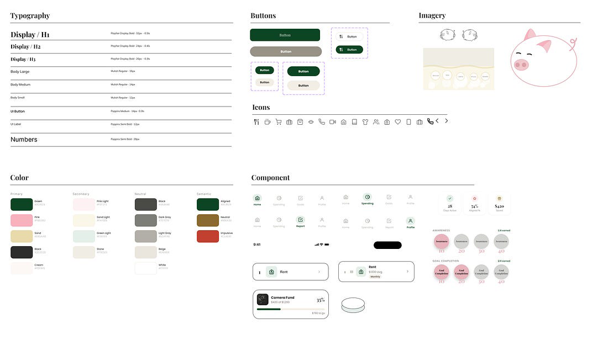
The solution
Join a budgeting journey designed to help you prioritize your spending — built around three behavioral pillars that make saving feel rewarding.
A penny saved is a penny earned
With daily challenges, skipping a single cup of coffee can transform into a ticket for your next vacation.
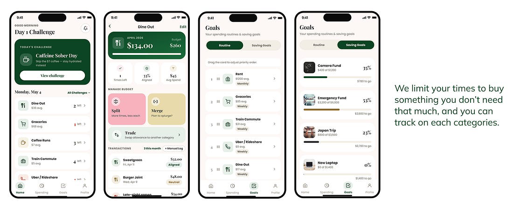
A flexible way to save without feeling restricted
Set up financial milestones that fit your lifestyle, instead of rigid limits that don't last.
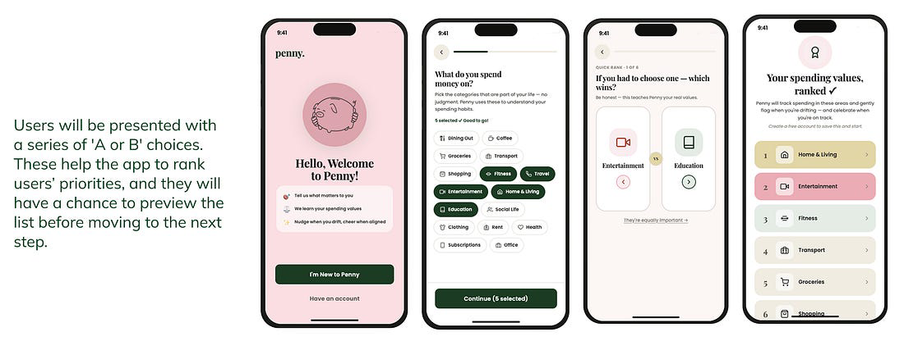
See what you've achieved
Celebrate your growth with visual milestones that make progress tangible and motivating.
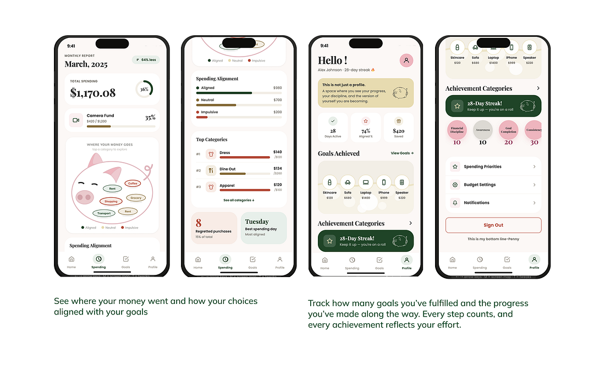
User Testing Insights
Once the high-fidelity screens were ready, we interviewed 18 users for feedback. Their insights were incredibly valuable — highlighting usability issues and revealing how we could better encourage consistent app engagement.
01
Daily Challenge screen
Clarify the meaning of the Split, Merge, and Trade features.
02
Achievement screen
Redesign the badge visuals and clearly define the meaning behind the progress metrics.
03
Spending Alignment screen
Better define the section and provide clearer supporting information.
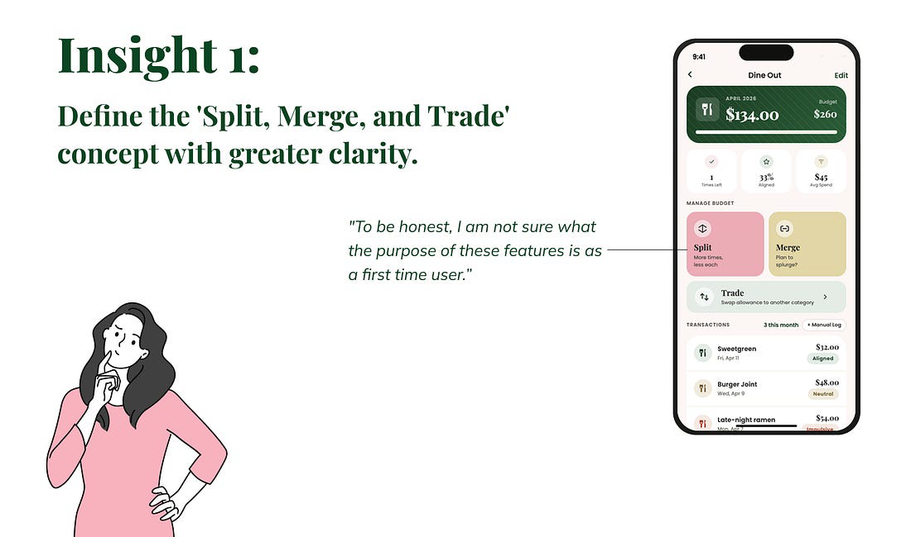
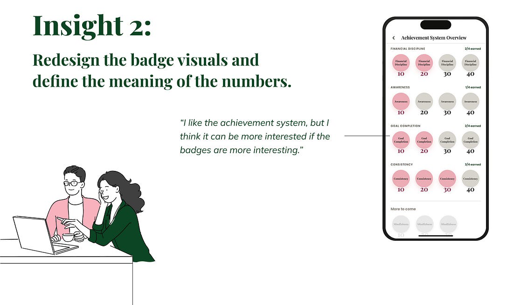
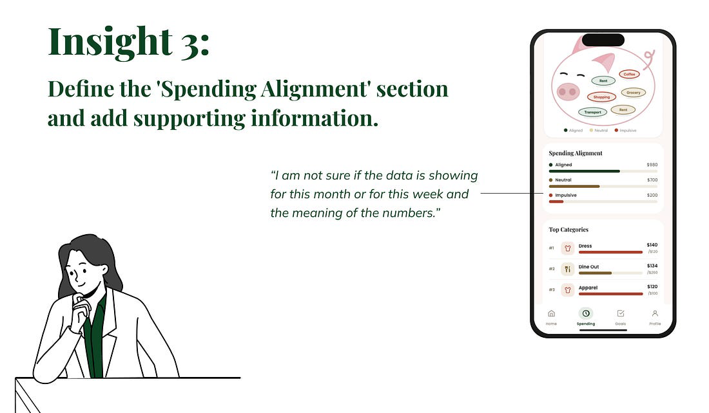
With this valuable feedback, we are planning to turn these findings into direct design iterations and improvements.
Next Steps
01
Iterate on the user feedback gathered during testing.
02
Dive deeper into how to keep users motivated throughout their budgeting journey.
03
Refine the overall visual design.
Reflection
"Design products that genuinely help people."
The reason I became a designer is to create products that genuinely help people. I'm incredibly grateful for the chance to build something creative and potentially meaningful to others. The process was wonderfully challenging — it required us to constantly think outside the box to answer what it truly means to design "a different budgeting app."
Lastly, I want to thank my incredible teammates. Without their collaboration and shared vision, penny wouldn't exist. This entire experience was filled with delightful, rewarding moments of growth.